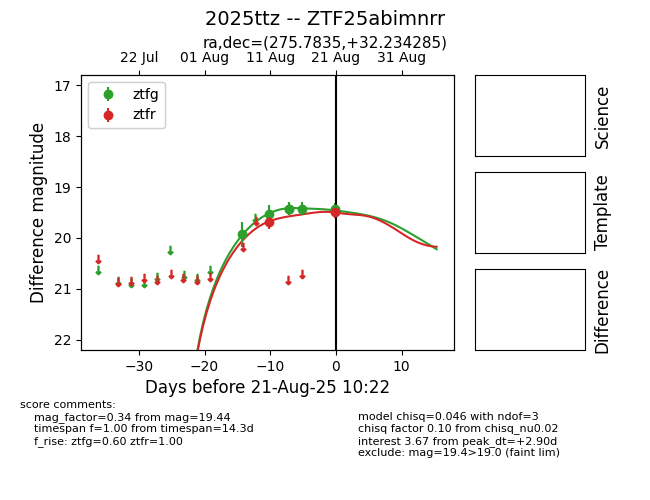

Target 2025ttz at 2025-08-21 11:20, see:
FINK: fink-portal.org/ZTF25abimnrr
Lasair: lasair-ztf.lsst.ac.uk/objects/ZTF25abimnrr
ALeRCE: alerce.online/object/ZTF25abimnrr
TNS: wis-tns.org/object/2025ttz
YSE: ziggy.ucolick.org/yse/transient_detail/2025ttz
alt names
ZTF25abimnrr (ztf,alerce)
2025ttz (tns,yse)
coordinates:
equatorial (ra, dec) = (275.7835,+32.23428)
galactic (l, b) = (59.9037,+19.63036)
photometry
last ztfg=19.44, ztfr=19.50
6 ztfg, 2 ztfr detections
